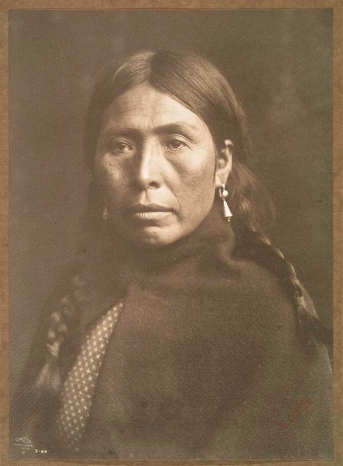

PROJET APACHES
Les Indiens d'Amérique en couleurs

Photographies issues des archives digitales de la librairie de New-York, des images libres de droits et originellement en Noir et Blanc datant du début du XXe siècle (environ 1900-1910).
Piquée par la curiosité de connaître le rendu des photographies en couleurs, j'ai utilisé la technique de l'autochrome sur Photoshop.
Un procédé de restitution photographique des couleurs des frères Auguste et Louis Lumière breveté en 1903.



En quelque sorte, on apporte un nouveau regard rafraîchi sur l'Histoire. Ce n'est pas un substitut à l'Histoire.
Nous n'étions pas là, on ne peut pas savoir avec précision les couleurs de la photo lorsqu'elle a été prise. Je construis une image qui montre à quoi cela aurait pu peut-être ressembler : c'est un ajout, rien de plus.

En quelque sorte, on apporte un nouveau regard rafraîchi sur l'Histoire. Ce n'est pas un substitut à l'Histoire.
Nous n'étions pas là, on ne peut pas savoir avec précision les couleurs de la photo lorsqu'elle a été prise. Je construis une image qui montre à quoi cela aurait pu peut-être ressembler : c'est un ajout, rien de plus.
{kind=link}